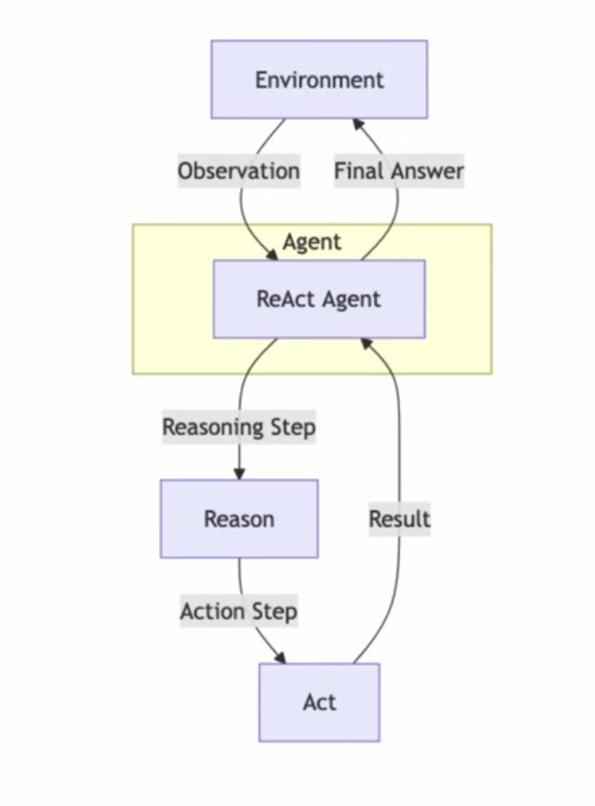
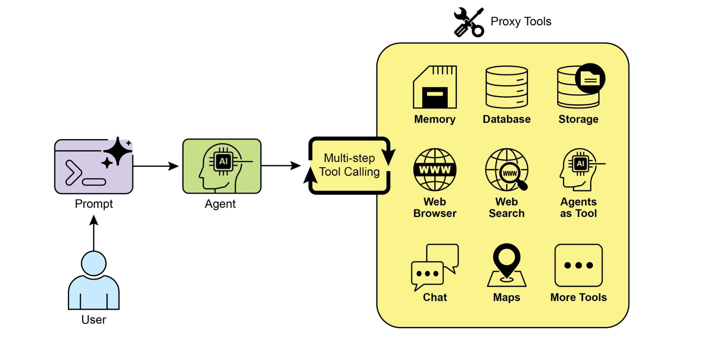
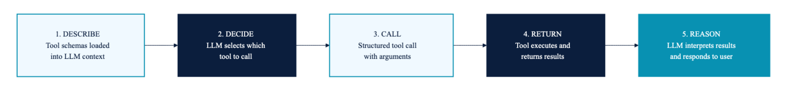
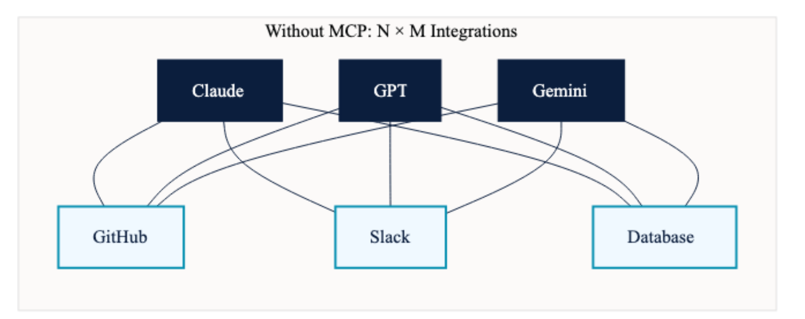
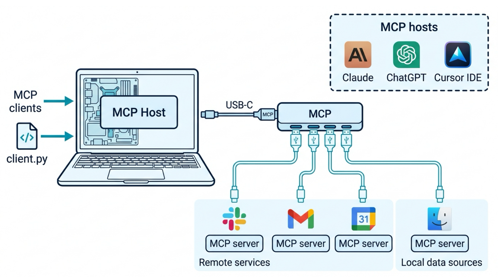
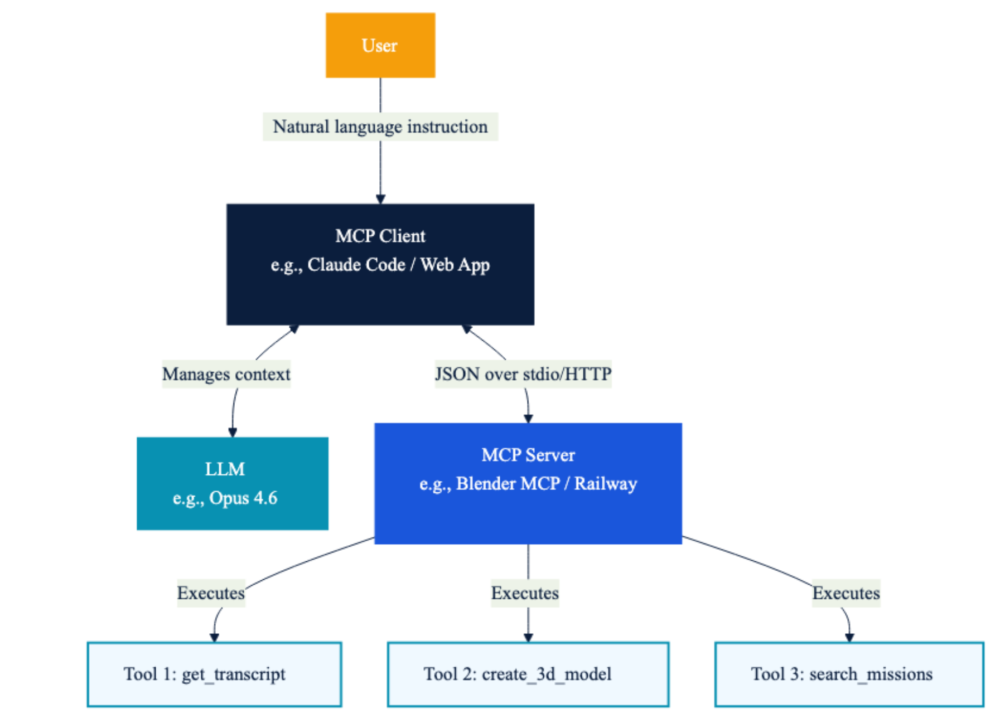
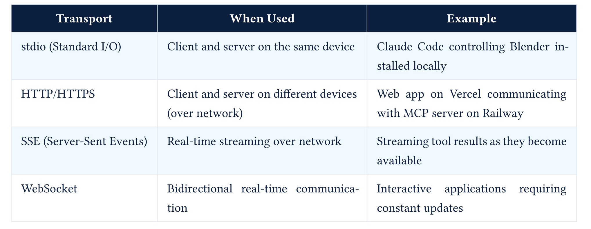

LLM Agents : Tools, MCP and Skills
Large Language Models : A Hands-on Approach
Essential Agentic Design Patterns
ReAct Pattern (Reason + Act)
- The agent alternates between Reasoning and Taking Actions (Act) in a loop to achieve its goals, often using tools, APIs, and memory

Example:
- An agent that performs a complex task like booking a flight, which requires multiple steps and interactions with external systems (searching for flights, comparing prices, making a reservation, etc.)
ReAct Pattern (Reason + Act)
Advantages:
- Combines the strengths of reasoning and acting, allowing for more complex and dynamic behavior
- Supports complex and multi-step tasks that require both planning and execution
- Integration with real-world tools and APIs allows for practical applications
Limitations:
- Increased complexity in design and state management
- Requires robust error handling and recovery mechanisms
- May be slower due to the need for multiple reasoning and action cycles
ReAct Loop - Deep Dive
The ReAct Pattern in Detail
The three primitives:
- Thought - The model’s reasoning about the current situation, what it knows, what it needs, and what to do next.
- Action - A structured invocation of a tool (or a special finish action).
- Observation - The result returned by the tool, added to the trace.
Trace structure (what the model actually sees):
System: You are a helpful assistant with access to tools. Answer the user's question.
User: In this repo, where is authentication handled, and what tests cover it?
Assistant:
Thought: I need evidence from the repository, not a guess. I should search for authentication-related files.
Action: search_repo
Action Input: {"query": "auth"}
Observation: Matches found in src/auth.py, src/middleware.py, tests/test_auth.py.
Thought: I should inspect the implementation and the tests before answering.
Action: read_file
Action Input: {"path": "src/auth.py"}
Observation: src/auth.py defines login, token validation, and session helper functions.
Thought: Now I need the test coverage.
Action: read_file
Action Input: {"path": "tests/test_auth.py"}
Observation: tests/test_auth.py covers login success, login failure, and expired-token behavior.
Thought: I have enough evidence to answer with file references.
Action: finish
Action Input: {"answer": "Authentication is handled primarily in src/auth.py, with middleware references in src/middleware.py. The direct tests are in tests/test_auth.py, covering login success/failure and expired-token behavior."}The ReAct Pattern in Detail
Native tool calling vs. ReAct prompting:
Early ReAct implementations parsed free text; modern implementations use structured APIs.
Modern APIs (Anthropic, OpenAI) use native tool calling: the model emits a structured
tool_useblock, not free-textAction:.
ReAct - Limitations
- No explicit lookahead: The model chooses the next action without a built-in tree search unless we add one
- No built-in backtracking: The model can revise its plan, but it cannot undo side effects unless the system provides rollback tools
- Context drift: As the trace grows, early observations may be “forgotten”
- Action-space myopia: The agent can only do what tools permit. Tool design limits reasoning.
Repo example: the agent may read too many files, miss synonyms like “session” or “token”, stop after one weak match, or cite a file it did not actually inspect.
ReAct + Planning (Plan-then-Execute)
Implementation
Plan Mode: AI analyzes requirements, reads codebase, builds a step-by-step plan. No modifications are made. The user reviews the plan.
Act Mode: AI executes the plan, editing files and running commands. Human approval at each step.
def plan_and_execute(task: str):
# Phase 1: Plan (no tool execution)
plan = planner_llm.generate(
system="You are a planner. Analyze the task and create a step-by-step plan. "
"Do NOT execute anything.",
user=task
)
# Phase 2: Execute (follow the plan)
for step in plan.steps:
result = executor_llm.generate(
system="You are an executor. Complete the given step using tools.",
user=f"Plan context: {plan}\nCurrent step: {step}"
)
# ... execute tools from resultExamples : Cline (Plan/Act modes), Aider (Architect mode)
ReAct + Reflection
Implmentation
def react_with_reflection(task: str, max_reflections: int = 3):
draft = basic_react_loop(task)
for attempt in range(max_reflections):
critique = critic_llm.generate(
system="Evaluate this output. Is it complete, correct, well-structured? "
"If not, explain what needs improvement.",
user=f"Task: {task}\nOutput: {draft}"
)
if critique.is_satisfactory:
return draft
# Retry with feedback
draft = basic_react_loop(
f"Original task: {task}\n"
f"Previous attempt: {draft}\n"
f"Feedback: {critique.feedback}\n"
f"Please improve based on this feedback."
)
return draft # Best effort after max reflectionsExamples : CrewAI, LangGraph
ReAct + Reflection + Compaction
ReAct + Compaction
- Compact the context window to avoid drift and forgetting
- The model can summarize or extract key information from the trace to keep the most relevant context in focus.
Examples - Claude Code, OpenClaw, Hermes etc
Code-as-Action
Implementation
# Instead of structured tool calls, the LLM writes code:
# LLM generates:
"""
results = web_search("latest AI frameworks 2026")
filtered = [r for r in results if r.date > "2025-01-01"]
summary = summarize(filtered)
final_answer(f"Found {len(filtered)} recent frameworks. Summary: {summary}")
"""
# The runtime:
# 1. Extracts the code block
# 2. Runs it in a sandbox (E2B, Docker, Pyodide)
# 3. Captures output and final_answer()
# 4. Returns to userExample : SmolAgents
Advantages:
- Can compose multiple tools in one step (regular tool calling does them one at a time)
- Can use conditionals, loops, variables within one “action”
- More natural for code-trained LLMs
- Fewer round-trips to the API
Limitations:
- Arbitrary code execution requires robust sandboxing
- Harder to audit than structured tool calls
- Error messages can be opaque
Event-Driven / Stream-Based / Graph Based
Event Driven
Used By: AG2 (MemoryStream), CrewAI Flows
Graph-Based State Machine
Used by: LangGraph, Google ADK 2.0
Heartbeat / Proactive Loop
Examples - OpenClaw, Hermes Agent
Implementation:
# Pseudo-code for OpenClaw's heartbeat
@cron("*/30 * * * *") # Every 30 minutes
def heartbeat():
context = assemble_context(
agents_md=read("AGENTS.md"),
soul_md=read("SOUL.md"),
tasks=read("tasks.md"),
memory=search_memory("pending tasks")
)
response = llm.generate(
system=context,
user="Check your task list. If anything needs attention, "
"handle it and report. Otherwise reply HEARTBEAT_OK."
)
if "HEARTBEAT_OK" in response:
return # Gateway suppresses, user sees nothing
gateway.send_to_user(response) # User gets notifiedHuman in the Loop (HITL) Pattern
Extends another pattern (typically ReAct), but adds a validation step prior to taking an action, where the agent seeks human feedback or approval before proceeding with certain actions.

Example: - An agent that performs sensitive actions, such as sending emails or making financial transactions
Agent Orchestration Pattern
- Multiple agents with different capabilities are orchestrated together to achieve a common goal

Example: - Software development agent that uses multiple specialized agents for code generation, testing, and deployment
Agentic Patterns Summary
| Variant | Complexity | Best For | Example Framework |
|---|---|---|---|
| Basic ReAct | Low | Simple tasks, prototypes | mini-swe-agent |
| Plan+Execute | Medium | Complex multi-step tasks | Cline, Aider |
| ReAct+Reflection | Medium | Quality-critical outputs | CrewAI |
| ReAct+Compaction | Medium | Long-running tasks | Claude Code |
| Code-as-Action | Medium | Data processing, multi-tool | smolagents |
| Event-Driven | High | Reactive systems, pipelines | AG2, CrewAI Flows |
| Graph State Machine | High | Production multi-agent | LangGraph |
| Heartbeat | Medium | Proactive, background tasks | OpenClaw |
Model-Centric to System-Centric Thinking
- Previous classes: Architecture, GPUs, Inference and Evaluation - LLM was central
- Current focus: Overall system design, where LLM is a critical component but not the only one
- Control flow (the loop)
- State management (context, soon memory)
- I/O interfaces (tools)
- Safety properties (bounds, sandboxing)
- Observability (tracing, logging)
When not to use an Agent
- Is the task structure stable? If the steps are the same every time, it’s a pipeline.
- Is there a small fixed branch set? (≤5 known branches.) It’s a workflow with an LLM router.
- Is the search space large but the verifier cheap? It’s best-of-N over generations.
- Does the LLM need to decide what to do based on what it just saw? Needs an Agent.
Repo-question decision:
A stable “find files -> retrieve chunks -> answer” system is a pipeline/RAG app. It becomes agentic when the model chooses follow-up searches, reads, tests, or stops based on observations.
Concrete examples
| Task | Best tool | Why |
|---|---|---|
| Extract structured fields from invoices | LLM call with JSON schema | Single call, no decision |
| RAG QA over a fixed corpus | Pipeline (retrieve -> rerank -> answer) | Steps are fixed |
| Customer support routing across 8 categories | Workflow (LLM router -> category-specific handler) | Bounded branches |
| Multi-step research across a changing web | Agent | The next step depends on the last result |
| Coding assistant on an unfamiliar repo | Agent | The whole point is exploration |
Tool Calling, MCP and Skills
Why LLMs need tools
- LLMs are next-token predictiors, lack intefaces to interact with the world

Why LLMs need tools
- Tools extend LLMs’ capabilities by providing access to external information, computation, and actions.

Tool Calling Patterns
Generation 1: Text-Based Tool Calls (2023)
- LLM generates free-text instructions to call tools, which are parsed by the system.
prompt = """
You are an AI assistant that can call tools.
Available tools:
1. get_weather_data(c_lat: float, c_long: float)
- Get weather data for a given location
First think step by step and write your reasoning inside <thinking>...</thinking>.
When you need to use a tool, output ONLY in the following format and also add your reasoning:
<tool_call>
{
"name": "<tool_name>",
"arguments": { ... }
}
</tool_call>
If no tool is needed, respond normally.
...
"""Tool Calling Patterns
Generation 2: Structured Tool Calls (2024)
- LLM generates structured tool calls using native API support from the provider, eliminating the need for free-text parsing.
Generation 3: MCP / Protocol-Based (2025-2026)
- LLMs interact with tools through a defined protocol (Model Context Protocol - MCP) - Standardized protocol. Any MCP server works with any MCP client. Language-agnostic
Tool Schema Example
{
"name": "search_products",
"description": "Search the product catalog from the e-commerce database. Returns top 50 matching items with price, availability, and category.",
"parameters": {
"type" : "object",
"properties": {
"query" : {
"type": "string",
"description": "Search keyword to match against\nproduct name, description, or SKU"
},
"category" : {
"type" : "string",
"enum" : ["electronics", "clothing", "home", "sports", "books"],
"description": "Product category to filter results"
},
"max_results": {
"type" : "integer",
"description": "Maximum number of results to\nreturn (default: 50)"
}
},
"required" : ["query"]
}
}Tool Schema Best Practices
| Principle | Description | Example |
|---|---|---|
| Verb-noun naming | Tool name follows action_entity format in snake_case | search_missions, get_weather_forecast, calculate_fuel_estimate |
| Clear description | Explain what the tool does, what it returns, and when to use it | Search the AstroLog mission database by keywords, status, etc. Returns matching missions with status, crew, and destination. |
| Enumerate constraints | Specify required vs. optional parameters and use enums for categorical parameters | enum: [planned, in_transit, completed, delayed, aborted] |
| Only mark truly required parameters | Avoid marking everything as required to prevent the LLM from hallucinating values for unknown fields | Only mark essential parameters as required |
| Return descriptions | Document what the tool returns so the LLM can interpret results | returns: { “missions”: [ { “id”: “”, “name”: “”, “status”: “” } ] } |
| Low parameter count | Keep parameters under 5; combine related fields into objects | More parameters = more chances for the LLM to make errors |
Tool Lifecycle

Who Runs the Tool?
- The LLM does NOT execute tools. The LLM produces a structured JSON describing which tool to call and what arguments to pass.
- The tool’s own logic executes the function. The structured output from the LLM is used to invoke the function programmatically.
- The LLM produces two types of output during a tool interaction: (1) a structured tool call (hidden from user), specifying tool name and arguments, and (2) a natural language response (shown to user), the final answer after reasoning over tool results.
MCP (Model Context Protocol)
- With standard fucntion calling, each tool integratiuon is custom-built on the client side
- eg : If a company had 3 AI chatbots and wanted to connect to 10 services, they needed 3 × 10 = 30 unique integrations.
- Unsustainable at scale with N x M growth in tools and clients.

MCP (Model Context Protocol)
- MCP standardizes how instructions are sent to the server and how results are returned
- With MCP, the N × M custom integrations are replaced by N + M integrations (N clients + M tools), since any client can call any tool as long as they both speak MCP.

The USB-C Analogy

MCP vs APIs
| Aspect | Traditional API | MCP |
|---|---|---|
| Purpose | Expose a service’s functionality to any consumer (web apps, mobile apps, scripts) | Standardize how LLMs specifically discover and invoke tools |
| Consumer | Any software: browsers, mobile apps, backend services, CLI tools | LLM-based applications (Claude Desktop, Cursor, custom agents) |
| Discovery | Manual: read API docs, write integration code, handle authentication | Automatic: client calls tools/list and receives all available tools with schemas |
| Integration effort | Custom code per API per client (N × M problem) | One protocol for all: connect once, access everything (N + M) |
| Schema format | Varies: OpenAPI/Swagger, GraphQL, custom docs | Standardized JSON tool schemas with name, description, parameters, and return type |
| Who writes the glue code? | The client developer writes API calls, auth, error handling, rate limiting | The server developer wraps their API once; clients connect with zero custom code |
| Communication | HTTP request/response (REST) or query/mutation (GraphQL) | JSON-RPC 2.0 over stdio (local) or HTTP/SSE (remote) with bidirectional messaging |
| Context awareness | None: APIs have no concept of LLM context windows or token budgets | Built-in: the MCP client manages what schemas and results enter the LLM’s context |
MCP Architecture

MCP Architecture
| Component | Role | Key Responsibilities |
|---|---|---|
| MCP Client | Intermediary between user/LLM and server | Manages LLM’s context window; decides what tool schemas to expose to LLM; decides what portion of tool results to feed to LLM; maintains conversation loop |
| MCP Server | Hosts and executes tools | Exposes tool schemas, resources, and prompts; executes tool functions; returns results to client; does NOT manage the LLM’s context |
| LLM | The reasoning brain | Decides which tools to call and in what order; produces structured tool call responses; reasons over tool results; produces final natural language output |
The LLM never communicates directly with the MCP server. All communication flows through the MCP client.
MCP Primitives

MCP Primitives
| Primitive | Description | Example |
|---|---|---|
| Tools | Functions the LLM can invoke via structured calls | get_transcript(video_url), search_missions(query, status) |
| Resources | Documents exchanged between server and client for later reference | Mission logs, crew schedules, transcripts stored as markdown |
| Prompts | Predefined, reusable system prompts associated with tool actions | Summarize this transcript in one paragraph |
Transport Layer and Communication
Transport Layer:

Communication - JSON-RPC 2.0